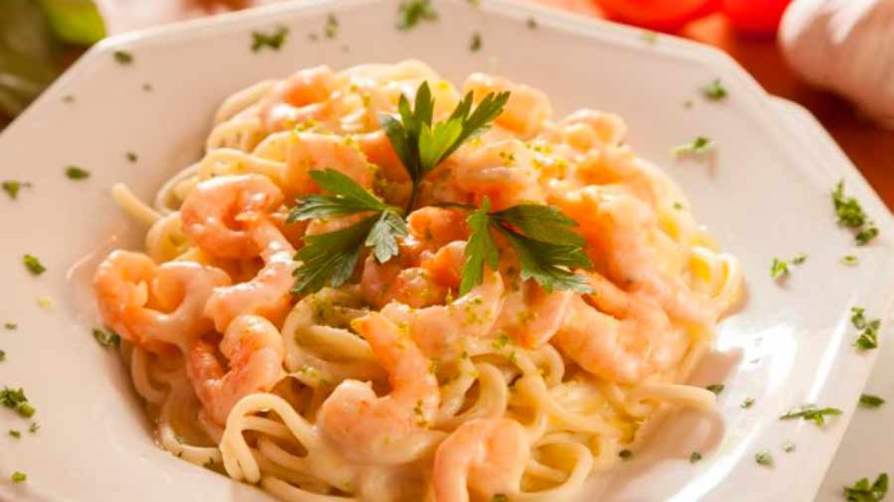
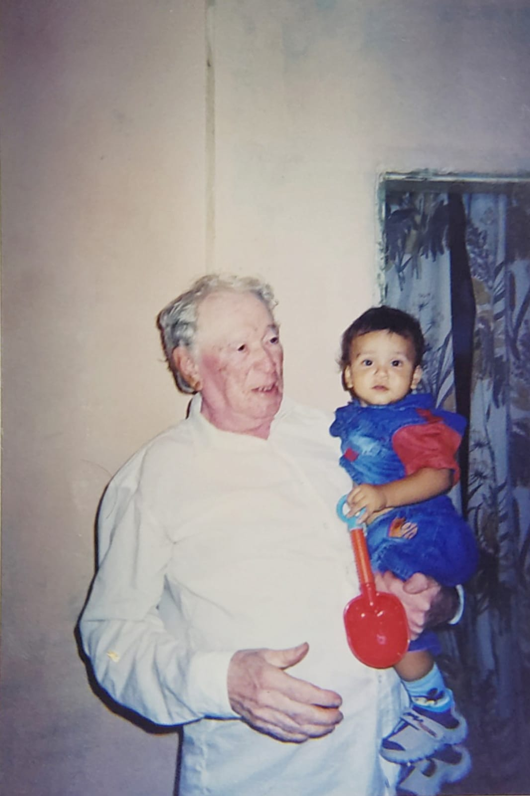

Jantar com meu bisavô Euclides

Talharim ao molho de ervas e camarão
Ingredientes:
Meio pacote de macarrão tipo talharim
1 litro de leite
2 colheres de sopa de manteiga
4 colheres de sopa de farinha de trigo
300 gramas de camarão cinza sem casca
Sal a gosto
Tempero de ervas a gosto
Alho a gosto
1 fio de azeite
Modo de Preparo
Camarão
Primeiro, frite no azeite os camarões já temperados com alho e sal.
Reserve.
Molho de ervas
Em uma panela coloque a manteiga e a farinha.
Deixe derreter e misture bem para formar uma pasta.
Vá colocando o leite, aos poucos, e continue mexendo.
Repita o processo até chegar ao ponto de molho bechamel.
Tempere com as ervas e sal.
Adicione o camarão ao molho.
Talharim ao molho de ervas e camarão
Coloque o macarrão em uma travessa e jogue o molho por cima.
Sirva a seguir.
